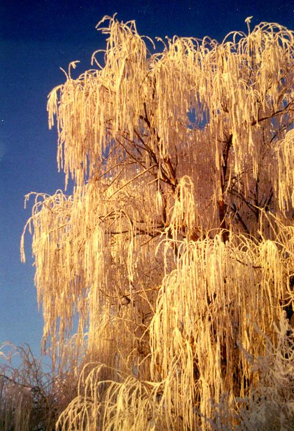

Another example of Mother Nature´s art work. The ice was light and didn´t hurt this weeping willow tree.
Section Index | Main Menu | Homepage
Fair use of these photos for educational purposes is permitted.
© Richard Carlson
Another example of Mother Nature´s art work. The ice was light and didn´t hurt this weeping willow tree. | |
|  | |
Section Index | Main Menu | Homepage Fair use of these photos for educational purposes is permitted. | |
|---|---|